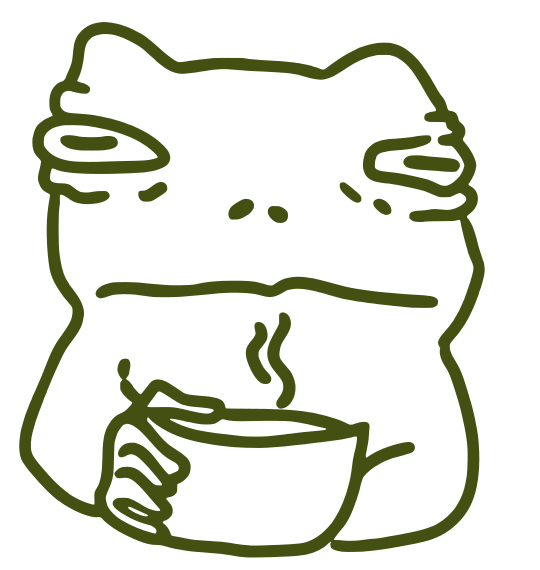
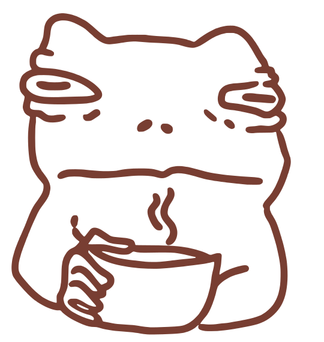

Biblia de la rana · 01
la rana
Versión 1. La cara, los ojos y la mano son el trazo original del logo vectorizado. Lo nuevo se dibuja encima con el mismo grosor y el mismo temblor.
Original
Vector v1

SiluetaBloque petiso y redondeado, casi tan ancho como alto, con dos orejitas. Sin cuello.
OjosPorotos horizontales que salen de la silueta, entrecerrados con rayas adentro y curvas extra en la punta. El derecho, más bajo.
RayitasUna bajo el ojo izquierdo y dos bajo el derecho.
Nariz y bocaDos puntitos alargados. Boca larga casi recta, apenas ondulada: cara seria y relajada.
ManoBulto alto con los dedos como rayas y el pulgar por arriba, agarrando de costado.
TrazoUna sola tinta, grueso (≈2% del ancho), tembloroso y sin relleno.
una sola tinta, cuatro colores

Verde geacofi
